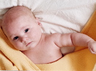
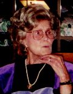
2004: Welcome Daniel Xavier, farewell Bebe Brown
As another year ends, it is time to update
family and friends on the major events of our year. By left-clicking
in each picture below, you will be able to see a larger version.
Esta carta também está disponível em Portuguès.
Christmas of 2003 found us in the same beach house in Cachoeira do Bom
Jesus in one of the most beautiful Islands
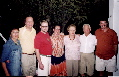
in Brazil. Scott missed his
flight to Brazil with me because his visa was late.
Thus I flew down earlier and spent some time in Porto
Alegre with family and friends. Scott joined us later in
Florianopólis and had to return on the night of Dec. 31. This was the
first time that we actually spent Christmas at the beach house. With my
nephew Tiago and my niece Maiara in their teens we had a very
quiet and relaxed time. My friend Horácio, who is from Paraguay but
lives in São Paulo, drove down to spend a few days with us. In one of
these incredible "small world" coincidences one afternoon I run into
our friend Ilmar and his boyfriend Simon at a beach bar in "Praia
Mole". Ilmar lives in Denmark and I had not seen him since 1997 when we
both were living in Brazil.
In January we once again had a great time at my department's
traditional Jasper Ski weekend. This year we stayed in style at the
top notch Jasper Park Lodge. Given our bad experience driving with
Winter conditions in 2003, this year we took the bus there. In
February our 1996 Dodge Stratus died. Thus we got a brand new Saab 9.5
station wagon!
Technical conferences kept me traveling for the first half of the
year. I went to Monterey, CA in February, when I took the opportunity
to visit with Kurt and Marty in San Francisco. I went back to Palo
Alto in March and visited Guillaume, Kagan and Irem in San
Francisco. In April I spent a week in Barcelona preceded by a quick
visit to Vancouver. Mid-April took me to West Lafayette in Indiana and
late-April was time for Santa Fe, New Mexico.
Late in May Scott took a whirlwind tour of the Scandinavian countries
on invitation from the Canadian government for discussions on fuel
cell research. They visited Oslo, Copenhagen, Helsinki, Stockholm, and
Trondheim, in 8 days! Scott had a chance to spend a weekend with
Ilmar and Simon in Copenhagen. When he got back I left for Washington
DC, with a short stop in Newark, Delaware, to see old friends.
You may recall that at the end of last year we were talking with a 26
year-old mother-to-be that was considering placing her child with us
for adoption. Kathryn was due in July. She told us in March that she
had decided to parent her baby. While we were disappointed for a
couple of days, we could not be unhappy about a mother deciding to
raise her own child, and we were glad that she made this decision
early before our expectations were high.
With the perspective of being parents a bit more distant from us, I
kept working on my plans for my sabbatical. I expected to
start the sabbatical on July 1st and to spend some time in the States,
and some time in Brazil.
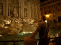
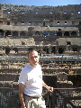
In June we took a three-week vacation trip to Italy. Except for
visiting family, this was the first long trip that Scott and myself
have done together in years. We chose Rome because we did not want to
be traveling around much and Rome had lots to offer in one place. We had a great time. We played by ear with
hotel reservations and such. We did all the traditional sites of Rome,
and we also did a "Food Tour" of Rome where we learn a lot about great
places to eat and some historical facts about food in Rome. Then we
head South to Naples, Pompei, and Positano. The chaos of Naples was so
overwhelming that we visited the Archaeology museum that hosts Pompei's
artifacts on the afternoon, and got out of town on the next morning!
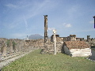
We spent a day in Pompei and then went to Positano, a nice town niched
on high cliffs on the seashore. The town pretty much has no streets,
only stairs. It was a great spot to spend relaxing days.
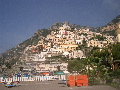
Back in Rome
when we were eating a gelato in our favorite gelateria, I told Scott
that it was a good thing that we did not had to go back home to hurry
up with preparations for the arrival of a baby....
We also planted our Summer vegetable garden, and spent time tending to
our perennial flower garden. Scott decided to try to start growing
corn in our basement in April to have a head start on our short
growing season --- outdoor planting here is at the last week of
May. He managed to grow the world's shortest corn ears. The entire
harvest, about 25 ears, was good for one meal. He did very well with
potatoes, carrots, peas, and green salads. I had success growing
tomatoes in the South side of the house --- with help from Silvio
Cazella who baby-sat it for me while we were traveling. Throughout the
year we enjoyed several dinners at home and at our friends Don and
Alayne with their 2-year old Jude. They had a second son, George, in
the end of June. We also enjoyed spending time with Phil, Ken, and
their son Ethan who is now three. I also stayed active with
the Making Waves Swim
Club.
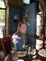
When we landed in the Toronto airport back from Rome, I checked my
email and found out that the adoption agency was trying to locate
us. We had been selected by a birthmother for adoption! We met
Belinda on the same week and learned that she could deliver the baby
anytime in the next 6 weeks. Thus we spent the first weekend back home
hurrying to buy the basics to welcome a baby home. We spent most of
July getting ready at work and at home for the arrival of the baby.
While we waited for the baby's arrival, I went for a one-week visit to
the IBM Toronto Lab in mid-July, and Scott went to a horse riding trip
to the back country in the Canadian Rockies with James, our neighbor's
teenager son. Scott had been taking horse riding lessons for a
year in preparation for this. Scott fell from the horse while riding
alone uphill and pulling a second horse. He had serious back pain for
several weeks after that.
On July 29th we rushed down to Calgary (about 3-hour drive from
Edmonton) because Belinda was in the hospital. It was a false
alarm. While we were in Calgary we received news that Kathryn's baby,
James Douglas, was born.
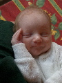 On August 11 Belinda's labour was induced, and
baby
Daniel was born! We were with Belinda in the birth-room and
bonded immediately with him. Daniel had to be in the baby ICU for a
few days. While at the hospital we met Mikaela, Daniel's 7 year-old
sister, who lives with Belinda. We took Daniel home to Edmonton on
August 15 with a very important strategic "pit stop" at our friends
Ronald and Emily's home in Lacombe, halfway between Edmonton
and Calgary.
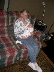
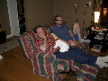 Daniel turned out to be a very easy baby.
He struggled for the first month with a very significant
diaper rash. But as soon as we realized that he was allergic to cow's
milk and switched him to soy-based formula the problem went away. In
late September Scott's parents came to visit Daniel for a few
days. They bonded with Daniel very quickly and Daniel got lots of
extra cuddling.
Our friends and family showered Daniel with gifts, welcome cards and
emails --- thus the cute clothes in pictures. Thanks to all of you
that took the time to call, visit, email, send cards, or buy
gifts. Sorry that we relapsed on sending thank you notes, our hands
were busy!
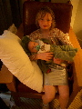 In early October we went back to Calgary
so that Scott could attend a professional meeting, and we visited
with Belinda and Mikaela. I took a two-day trip to a meeting in
Toronto. In November Belinda and Mikaela came up to Edmonton for a
second visit with Daniel and us. In early December Daniel started at
the University daycare and, as one of the youngest "students" he
immediately became the darling of the staff and of the older kids.
On December 3rd, the Alberta Court of Queen's Bench issued the final
adoption order for Daniel and made us his sole custodians. As a
consequence Daniel's name became Daniel Xavier Amaral Meadows and his
birth certificate was changed to list him as the son of Edward Scott
Meadows Jr. and Jose Nelson Amaral.
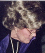
 On the evening of December 6, Scott's grandma,
Bebe Brown, passed away. As the eldest grandson, Scott has always
been Bebe's baby. They had a very close relationship and Bebe has
always been Scott's anchor. It had been hard seeing Bebe's health
deteriorate slowly in the past couple of years. We were especially
saddened that Bebe did not get to see Daniel before she was gone. We
can picture Bebe using one of her trademark Oklahoma
superlatives: "Isn't this the cutest baby that you ever
saw?" and two proud daddies would nod in agreement.
On the evening of December 6, Scott's grandma,
Bebe Brown, passed away. As the eldest grandson, Scott has always
been Bebe's baby. They had a very close relationship and Bebe has
always been Scott's anchor. It had been hard seeing Bebe's health
deteriorate slowly in the past couple of years. We were especially
saddened that Bebe did not get to see Daniel before she was gone. We
can picture Bebe using one of her trademark Oklahoma
superlatives: "Isn't this the cutest baby that you ever
saw?" and two proud daddies would nod in agreement.
On December 8 Daniel opened the local news' broadcast. We had been
contacted by the local station to comment on an upcoming Supreme Court
of Canada decision. The court published an opinion, on December 09,
stating that legislating on same-sex marriage is the exclusive
prerogative of the Canadian Parliament. The reporter was excited that
we had a baby and used footage of us playing with Daniel in her
report. We expect the Canadian parliament to approve the legalization
of same-sex marriage nationwide in 2005. Canada will then be the third
country, after Belgium and the Netherlands, to approve same-sex
marriages.
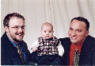
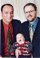
Anticipating bringing Daniel to meet Bebe in Tulsa, Scott had bought
Daniel some cute holiday clothes --- Bebe loved to see babies
dressed up in cute clothes. We had some studio pictures taken by
Brenda Bastell. The picture
on the right summarizes Daniel attitude towards the whole project.
We are now getting ready to go to Oklahoma to spend the holidays with
Scott's family. Have nice holidays.
Nelson (& Scott)
{kind=link}
{kind=link}
{kind=link}
{kind=link}
{kind=link}
{kind=link}
{kind=link}
{kind=link}
{kind=link}
{kind=link}
{kind=link}
 On the evening of December 6, Scott's grandma,
Bebe Brown, passed away. As the eldest grandson, Scott has always
been Bebe's baby. They had a very close relationship and Bebe has
always been Scott's anchor. It had been hard seeing Bebe's health
deteriorate slowly in the past couple of years. We were especially
saddened that Bebe did not get to see Daniel before she was gone. We
can picture Bebe using one of her trademark Oklahoma
superlatives: "Isn't this the cutest baby that you ever
saw?" and two proud daddies would nod in agreement.
On the evening of December 6, Scott's grandma,
Bebe Brown, passed away. As the eldest grandson, Scott has always
been Bebe's baby. They had a very close relationship and Bebe has
always been Scott's anchor. It had been hard seeing Bebe's health
deteriorate slowly in the past couple of years. We were especially
saddened that Bebe did not get to see Daniel before she was gone. We
can picture Bebe using one of her trademark Oklahoma
superlatives: "Isn't this the cutest baby that you ever
saw?" and two proud daddies would nod in agreement.
{kind=link}
{kind=link}